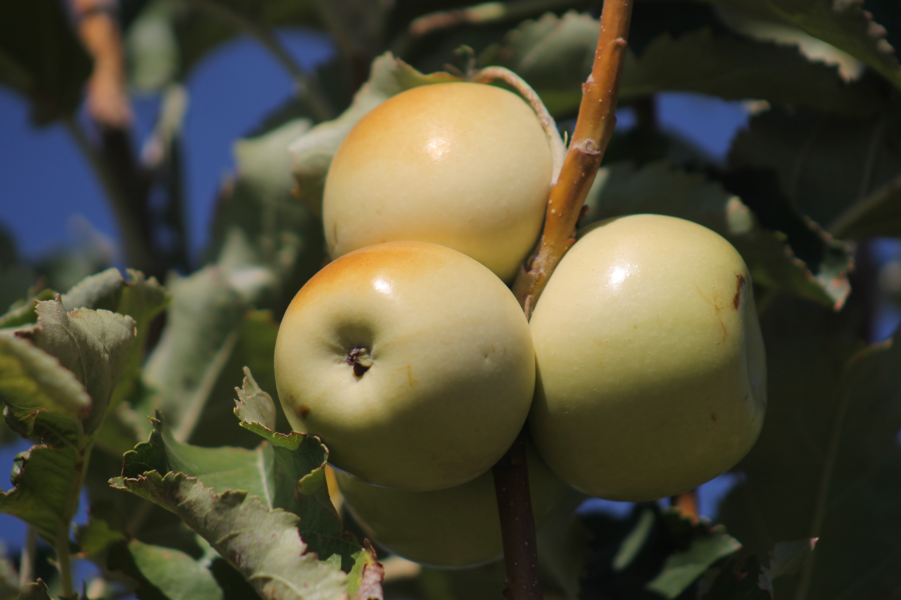

Register plants
Record harvestable plants before the fruit, nuts, and berries are ready.

Tree registry first. Harvest network next.
A registry for fruit trees, nut trees, berry bushes, and other perennial food plants, built so local harvest teams can find, care for, and share abundance when the network is ready.
The project
localized.life harvest begins as a registry. Over time, it can become the coordination layer for harvest permissions, volunteer crews, food transport, preservation, tree planting, and community distribution.
Record harvestable plants before the fruit, nuts, and berries are ready.
Invite plant spotters, harvesters, transport help, area coordinators, and hosts.
Start with Paw Paw Revival, then add more sponsored tree campaigns later.
Part one: harvest registry
The core localized.life harvest idea is simple: build a living registry of harvestable trees and perennial plants now, then use it to organize permissions, harvest windows, volunteers, and food movement later.
Living list